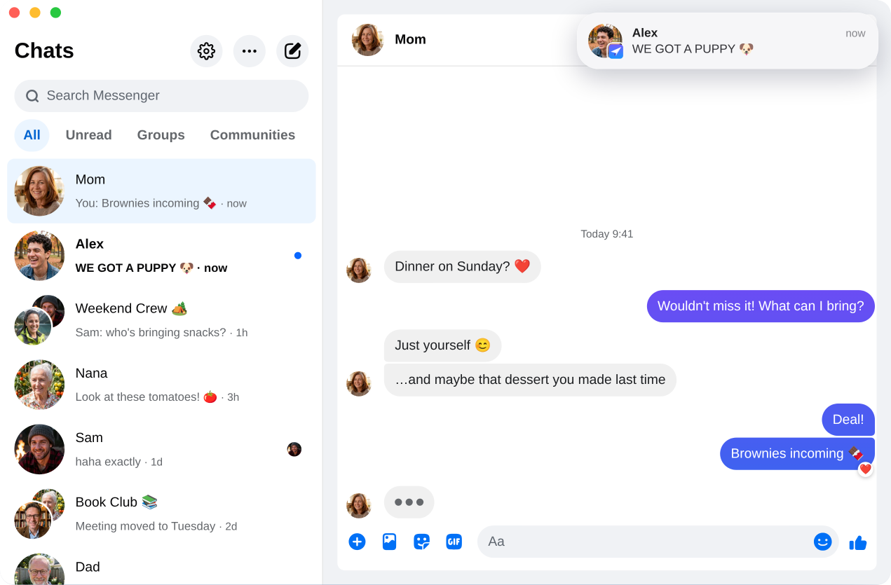

Carrier for Messenger / Caprine
Updated November 2026
Caprine not working? A maintained alternative
Caprine was the go-to open-source Messenger app for years. It was built for messenger.com, which Meta closed in April 2026, and it has not had a release since January 2026. Here is what is going on, and what Caprine users can switch to.
Free and open source · Mac, Windows and Linux
The short answer
Caprine's latest release, 2.61.0, still loads messenger.com, which now redirects to Facebook. Some people report it still mostly works. Others hit missing notifications, no Dock badge, broken call buttons or sign-in errors, and a fix has not been released.
If you want a maintained replacement in the same spirit, Carrier for Messenger is free, open source under the MIT license, and built for facebook.com/messages from the start. It is unofficial and not made by Meta.
What is going on with Caprine
This is a summary of public information from the Caprine repository, checked November 8, 2026. Caprine is not archived, and its README says the project is feature complete and welcomes fixes.
- Built for messenger.com. Caprine wraps messenger.com. On April 16, 2026 Meta retired that site for messaging and began redirecting it to facebook.com/messages.
- No release since January 2026. The latest version is 2.61.0, published January 2, 2026, before that change.
- Open bug reports. Since April, issues report that notifications and the Dock badge stopped working (#2398), call buttons do nothing (#2393), sign-in shows "This page isn't available" (#2395), and Windows users get logged out after a reboot (#2392).
- A migration is waiting. A pull request to move Caprine to facebook.com/messages (#2379) was opened in February 2026 and has not been merged.
- Homebrew disabled the cask. On September 1, 2026, Homebrew disabled the Caprine cask because it fails macOS's Gatekeeper check, so
brew install --cask caprineno longer works.
None of this means Caprine was bad. It served a lot of people well for years, and Meta's changes would have been hard on any client built for messenger.com.
Your options
What Caprine users can do
Compare
Caprine and the alternatives
| Carrier | Caprine 2.61.0 | Caprine fork | Messenger Next | |
|---|---|---|---|---|
| Loads | facebook.com/messages | messenger.com (now redirected) | facebook.com/messages | facebook.com/messages |
| Mac download | 4.1 MB | 102.9 MB | 126.4 MB | 10.1 MB |
| Windows installer | 3.0 MB | 82.3 MB | 116.2 MB | 4.1 MB |
| Linux .deb | 5.3 MB | 77.6 MB | 105.1 MB | 5.2 MB |
| Built on | System web engine | Electron | Electron | System web engine |
| Source code | Open (MIT) | Open (MIT) | Open (MIT) | Closed |
| Latest release | November 2026 | January 2026 | November 2026 | September 2026 |
From each project's latest release on GitHub, checked November 8, 2026. Mac sizes are the Apple Silicon .dmg; Windows and Linux sizes are the 64-bit packages. The fork is bankjaneo/caprine.
Coming from Caprine
Most of what Caprine users rely on has a counterpart in Carrier:
- A focused window. Facebook's Feed, Reels, Marketplace and global search are hidden, so you only see your chats.
- Tray and badge. A tray or menu bar icon, an unread count on the Dock or taskbar, start on login and hide on close.
- Keyboard shortcuts.
Cmd/Ctrl+1to9jump to conversations,Ctrl+Tabcycles through them,Cmd/Ctrl+Ksearches, andCmd/Ctrl+Shift+Nstarts a new conversation. - Dark mode and themes. Light, dark or system appearance, nine built-in themes or your own, an accent color and a
custom.cssoption. - Privacy. Hide that you're typing, hide names and avatars, and block Facebook's analytics requests (on by default).
On top of that, Carrier has notifications you can reply to, react to or mute; right-click menus for messages and conversations; exporting a conversation to HTML or JSON; and scheduled text messages.
To be upfront about the differences: Carrier does not block Messenger's "Seen" indicator, which Caprine offered, and it does not support several accounts at once.

Switching takes a minute
- Quit Caprine. You can uninstall it later; the two apps don't share any data.
- Download Carrier for your system below, or on a Mac run
brew install --cask kristofferR/tap/carrier. - Sign in with your Facebook account. Your conversations live in your account, so they are all there. Caprine's settings don't carry over.
FAQ
Caprine questions
Is Caprine dead?
It is not archived, but there has been no release since 2.61.0 on January 2, 2026, and the facebook.com migration has not been merged. Whether it returns is up to its maintainers.
Why did Caprine break?
Caprine was built around messenger.com. When Meta retired that site in April 2026 and moved desktop messaging to facebook.com/messages, the page Caprine loads and the markup its features depend on changed. Read what happened to Messenger on desktop for the full timeline.
Why can't I install Caprine with Homebrew anymore?
Homebrew disabled the Caprine cask on September 1, 2026, because the app fails macOS's Gatekeeper check. Carrier's cask is brew install --cask kristofferR/tap/carrier, and its Mac app is signed and notarized by Apple.
Will my conversations carry over?
Yes. Neither app stores your conversations; they live in your Messenger account. Sign in to Carrier and they appear, in sync with your phone.
I used Caprine without a Facebook account. Will Carrier work?
Unfortunately not. Since April 2026, Meta lets Messenger-only accounts chat only in the mobile app. Every desktop client, Carrier included, loads facebook.com/messages, which needs an account that can sign in to Facebook.
Get Carrier for Messenger
Free and open source, for Mac, Windows and Linux. Sign in with your usual Facebook account.
Every download, with checksums, is on GitHub.